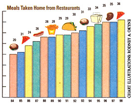
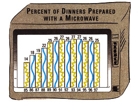
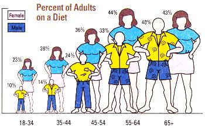

BITS AND PIECES
With all the health and fitness magazines, fad diets, "lite" foods, and exercise accessories flooding the market these days, you might think Americans are eating healthier than ever. Think again. Recent studies show a decrease in dieters over the last dozen years (37% of us were cutting back in 1986, compared to only 27% today), not to mention a downward trend in the number of us concerned about our cholesterol, caffeine, salt, and sugar intake.
This was just one of the surprising findings revealed in a series of surveys recently conducted by The NDP Group, a New York-based market research firm. NDP gathered information from some 13,000 families in an attempt to track the latest eating trends. What else did the researchers discover?
The average American family brings take-out home once every ten days-or twice as often as it did in the mid-1980s. Despite our growing aversion to dieting, some 76% of us consume low- and no-fat products regularly. Microwaves zap a full 25% of the meals we "cook" at home. And just 56% of our "homemade" dinners include even a single item prepared from scratch.
So pull up a slice of frozen, microwavable, low-fat-mozzarella, high-fat-pepperoni pizza, and peruse the accompanying charts for a glimpse at what Americans are serving up and gulping down.
-Heather Cox
|
 |
 |
 |